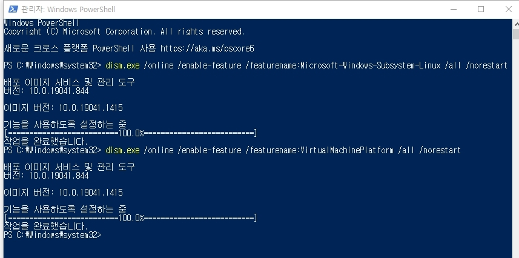
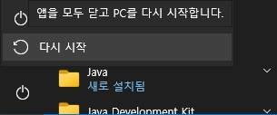
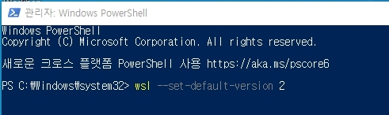
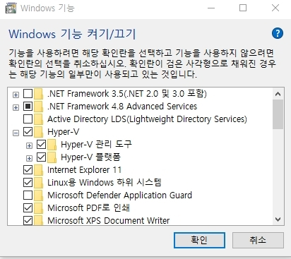
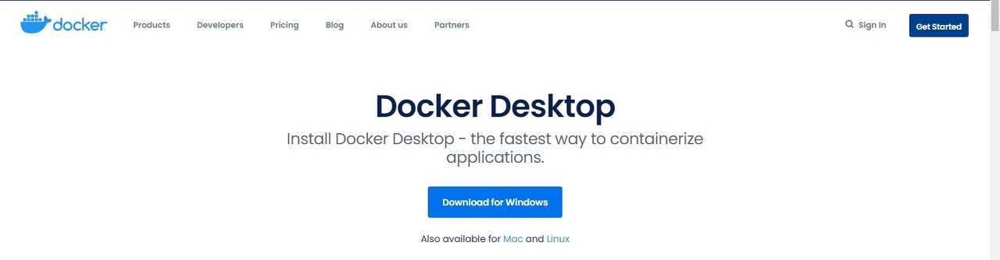
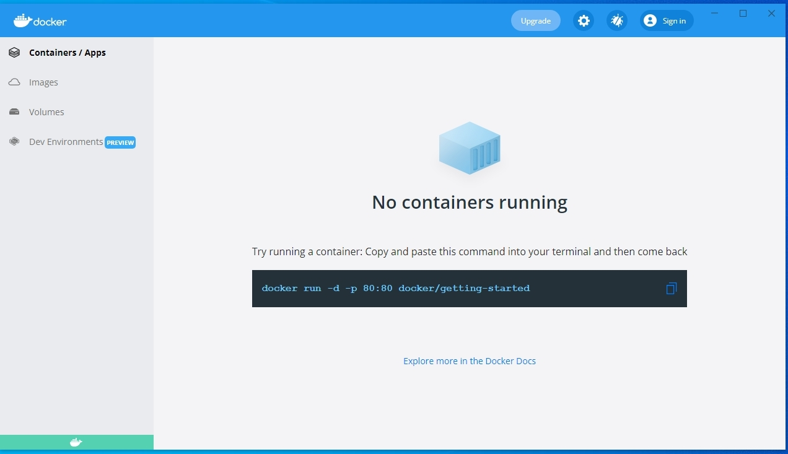
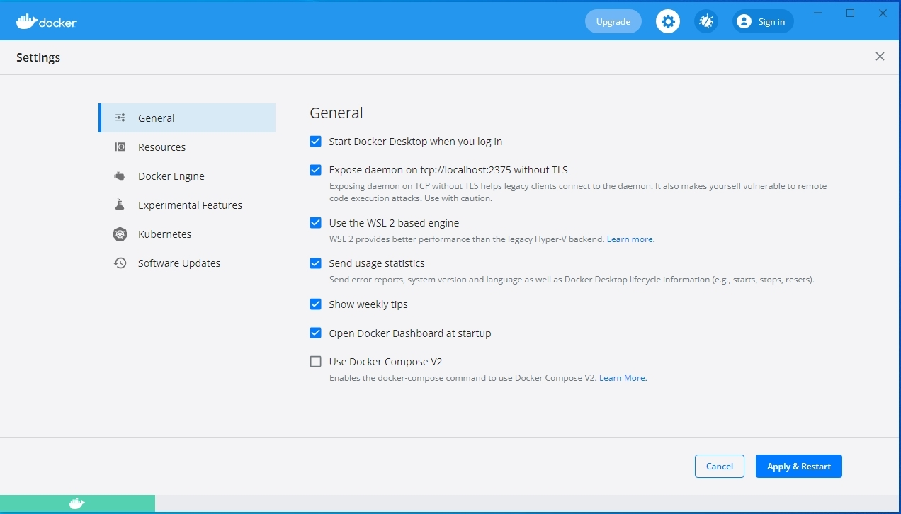
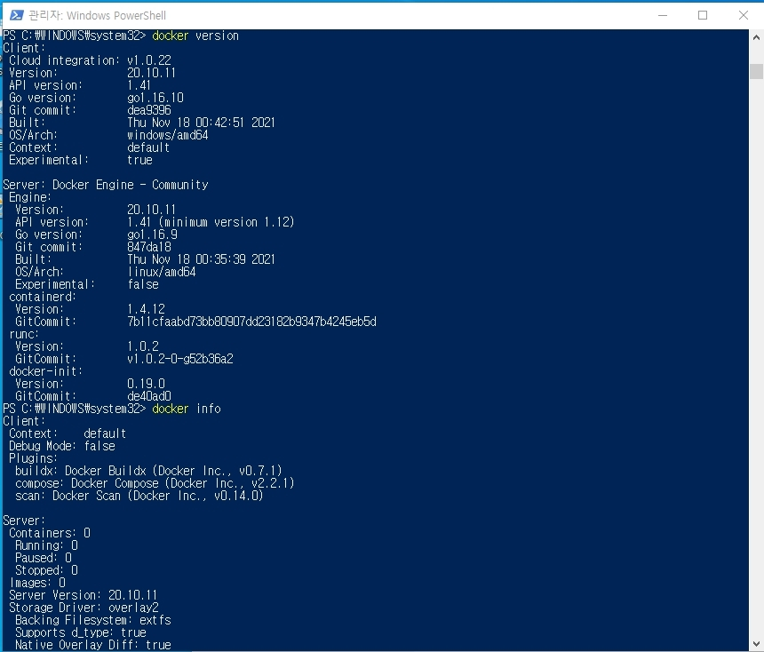

1. PowerShell에서 관리자 권한으로 다음 명령어를 실행합니다.

2. 재부팅한다.

3. 해당 url로 파일을 다운로드 한다.
4. PowerShell에서 관리자 권한으로 wsl --set-default-version2를 입력한다.

5. 제어판에서 프로그램->Windows 기능 켜기/끄기->Hyper-V->Hyper-V 관리도구, Hyper-V 플랫폼을 체크한다.

6. Docker 사이트에 들어가 [Download for Windows]를 클릭라여 다운 받아 실행한다.

7. 설치가 완료되면 Upgrade 옆에 있는 톱니바퀴(설정)를 클릭한다.

8. 톱니바퀴(설정)을 클릭하고 General에서 Expose daemon on tcp://localhost:2375 without TLS를 클릭한다.

9. PowerShell 관리자 모드에서 docker version, docker info를 입력해서 설치가 다 되었는지 확인한다.
